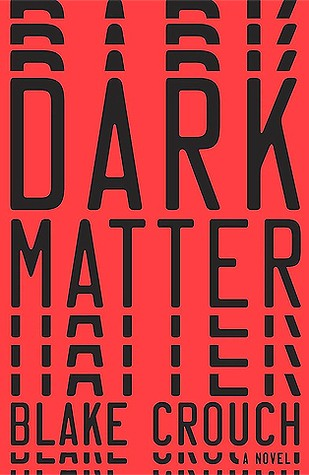

Dark Matter
Worth a shot ◐

"Two roads diverged in a yellow wood, and sorry I couldn't travel both. Orrr could you?"
— Not Robert Frost.
Every day, we walk with a heavy bag of empty and smudged canvases strapped to our backs, trying to paint the skies and stars of roads we have long abandoned. Some, we drop on our way; others keep repainting every day. The absence of certain people and things feels heavier than their presence ever did. Jason2 is no better than us, he tries painting a life with Daniela, a love interest that he sacrificed for his career.
An evening of warmth and gaiety around a mediocre physics professor's family dinner table turns upside down when he is kidnapped on his way home. From this point onwards, Blake Crouch never lets the reader's nerve rest, and keeps the entire book, a fast-paced thriller.
In my formative reading years, I encountered a handful of vintage science-fiction books which currently is shutting my mouth to call Dark Matter one of them. At its core, Dark Matter is a story of love, longing and separation where Science plays the role of Govinda in a 90s Salman movie.
Blake Crouch hands this character a box which can take him to his desired world, which, if you may, is the road not taken.
Hold up.
If the box were yours, where would you go? To the person who almost stayed? And if you found yourself happier there, what would happen to everyone who is waiting for you in this life?
Anyways, the story is suspended on a thread of Many World Interpretation of Quantum Mechanics, which states that every possible outcome of every decision or quantum event does not collapse into a single reality. Instead, the universe splits, creating parallel worlds or timelines for every choice ever made or unmade.
The premise is so pervasive in science fiction that it raises questions on originality. However, Dark Matter passes this test with glory, as a fun quick read. Interesting just enough to scratch the itch and turbulent enough to flip pages.
Although the premise is intriguing and piques your interest to explore deeper human psyche, Dark Matter is bereft of philosophical depth or prose that would want you to pick up your notes. Along with characters falling flat most of the times, the story as well feels written to be complete than be understood. Blake Crouch drives so much on the urgency of Jason's return that readers feel abandoned of original thesis.
As a reader, I would have loved to explore Jason's inner conflict on living life that he kept painting once a while, that had recognition, a glorious career, the Pavia Prize, but again that's another road not taken.